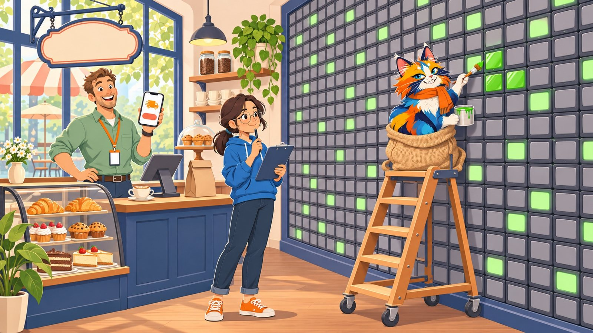
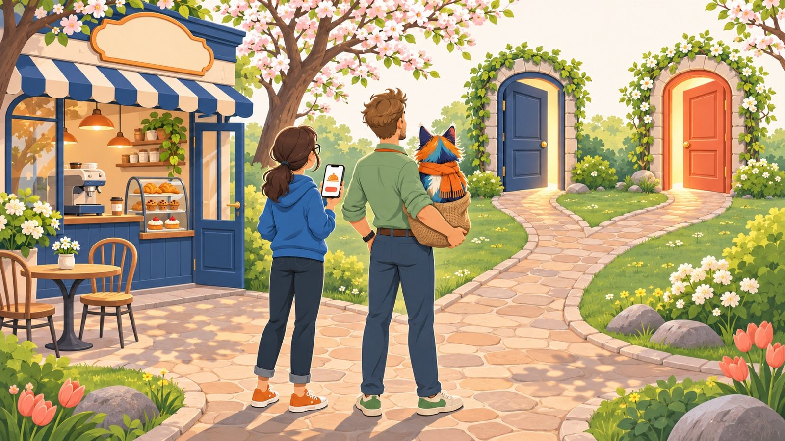

Прокрас — это писк кассы из «Вероятности на пальцах». Касса пищит и на фальшивки, и иногда на настоящие купюры. Сколько фальшивок среди писков, зависит от того, сколько их вообще.
Сначала вспомним
В тесте новой кнопки p = 0.03. Что это за число?
p‑value = P(«такая разница или больше» | «эффекта нет»). Вероятность эффекта по нему одному не посчитать. Это глава 10.
Касса пищит на 9 фальшивых купюр из 10 и на 5 настоящих из 100. Фальшивая — 1 купюра из 100. Касса пискнула. Какова доля фальшивых среди писков?
Из 10 000 купюр 100 фальшивых дают 90 писков, 9900 настоящих — 495. Среди 585 писков фальшивых 90, это 15%. Это Байес из «Вероятности на пальцах», шаг 6 — и вся эта глава.
Часть III · глава 12
«Прокрасилось» — значит, работает?
После главы ты сможешь оценить, какая доля прокрасившихся тестов настоящие, и ответить бизнесу одной фразой.
- 1. Что здесь случайно?
- 2. Как распределено?
- 3. Центр и разброс
- 4. Насколько шумит среднее
- 5. Сколько стандартных ошибок до порога
- 6. Ответ бизнесу

Тест прокрасился — порог 5% пройден. Но порог считали в мире без эффекта. Бобу нужен другой ответ: из всех зелёных тестов сколько настоящих?
1000 тестов за год

Боб, продакт
За год провели 1000 тестов, около 125 прокрасились. Выкатываем все 125!

Котейка
Я раздаю «победы» пустым идеям: каждой двадцатой. Кому повезёт.

Алиса, аналитик
Обычно работает примерно каждая десятая идея, мощность наших тестов — 80%, α — 5%. Посчитаем, сколько среди зелёных подарков Котейки.
Напиши число — на следующей карточке проведём год.
Год экспериментов
Каждая клетка — один тест. Нажми «Провести год», потом поменяй α.
1000 тестов за год по исходу
настоящая победаложная победапропускверное «нет»
Теперь поменяй условие
—настоящих побед
—ложных побед
—пропусков
—верных «нет»
—ложных среди прокрасившихся
Подглядывание здесь — только анонс: если смотреть на тест пять раз и останавливать при первом p < 0.05, пустые тесты прокрашиваются уже в 14% случаев вместо 5%. Как подглядывать честно — в курсе «A/B без мифов».
Доля настоящих среди зелёных
История
В штуках
Из 1000 тестов 100 рабочих → 80 побед. 900 пустых → 45 ложных побед. Среди 125 прокрасившихся 45 ложных — 36%, больше трети. При мощности 30% — 30 настоящих и те же 45 ложных: ложных 60%.
Формула
P(«эффект» | «прокрас») = мощность·π / (мощность·π + α·(1 − π))
FDR = 1 − P(«эффект» | «прокрас»)
Словами: π — доля рабочих идей. Доля настоящих среди прокрасившихся зависит от базы и мощности, а не только от α. Здесь 0.8·0.1 / (0.8·0.1 + 0.05·0.9) = 0.08/0.125 = 64% настоящих.
Строго говоря, двусторонний тест на 5% красит пустую идею зелёным в 2.5% случаев и красным — тоже в 2.5%. Мы считаем все 5%: на практике подглядывание, лишние метрики и срезы добавляют ложных побед, так что 5% — не завышенная оценка.
Без формул и с другими играми — в «A/B на пальцах», шаг 7 про p‑value и шаг 10 «Когда зелёное врёт».
Слабые тесты — больше ложных побед
Доля ложных среди прокрасившихся при α = 5% для трёх команд: у одной работает 5% идей, у другой 10%, у третьей 30%. Наведи на график, чтобы увидеть числа.
Доля ложных побед в зависимости от мощности
работает 5% идей10%30%
Наведи на график или коснись его.
Две вещи двигают долю настоящих побед: проверять идеи посильнее, чтобы база была выше, и делать тесты мощнее. α тоже помогает, но ценой мощности — глава 11. Каждый недомощный тест — лотерея, где выигрыш часто фальшивый.
10 000 продактов-монеток
Представь 10 000 продактов, которые угадывают исход теста подбрасыванием монетки. Каждый год выбывают те, кто ошибся. Сколько «гуру» продержатся 10 лет подряд?
Сколько продактов-монеток угадывают год за годом
По формуле 10 000 / 2¹⁰ ≈ 10 человек угадают 10 раз подряд без всякого умения. С тестами то же: «мы запускаем по вторникам, и у нас всё прокрашивается» — это ритуал, как у голубей Скиннера, которым корм сыпали по таймеру, а они решили, что дело в танце.
Идея из книг: Gerd Gigerenzer, «Risk Savvy»; Nassim Taleb, «Fooled by Randomness»
Тест серый — а в каком‑нибудь районе «прокрасится»
Тест бесплатной доставки в целом серый. Боб режет результат по районам доставки и проверяет каждый район отдельно: вдруг где‑то сработало. Пусть на самом деле эффекта нет нигде. Тогда каждый район прокрашивается сам с вероятностью α = 5%, а районов в городе много. Двигай число районов.
Шанс, что хотя бы один район ложно прокрасится
P(«хотя бы один ложный район») = 1 − (1 − α)k
Формула верна, когда районы независимы: в каждом свои гости. Если районы похожи и шумят вместе, они красятся пачками, и шанс «хотя бы одного» меньше — но в среднем ложных районов всё равно α·k. Тот же счёт работает для метрик одного теста и для тестов за квартал. Поправку на множественное тестирование разбирают в курсе «Прикладная статистика для аналитика» и в «A/B без мифов».
Слишком много побед
Боб, продакт
В этом квартале прокрасилась треть тестов! Мы гении.
Что стоит проверить первым?
При базе 10%, мощности 80% и α = 5% прокрашивается 0.1·0.8 + 0.9·0.05 = 12.5% тестов. Треть — это либо 38% рабочих идей, что бывает редко, либо ложных побед больше, чем 5%: подглядывание, «хоть какая‑то из 20 метрик», сломанный сплит. Слишком хорошо — повод проверить, а не праздновать.
Напиши долю ложных побед
Функция получает долю рабочих идей base, мощность power и α. Вернуть — долю ложных среди прокрасившихся.
Обратный вопрос — задача с собеседования ниже: при α = 5% и базе 10% ложных не меньше 31% даже при мощности 100%.
Три задачи и как на них отвечать
Схема ответа одна: переформулируй → посчитай в штуках → запиши формулу → проверь симуляцией → скажи вывод одной фразой.
Проверили 1000 гипотез, и все они на самом деле верны, эффектов нет. Уровень значимости 1%. Сколько гипотез отвергнем?
Переформулирую: каждая проверка — монетка с вероятностью «прокраса» 0.01. Сколько прокрасов из 1000?
В штуках: в среднем 10. Но это среднее: в разные годы будет то 6, то 14.
Формула: число отвергнутых ~ Bin(1000; 0.01), среднее 1000·0.01 = 10, SD = √(1000·0.01·0.99) ≈ 3.1; в 95% случаев — примерно от 4 до 16.
Вывод: около 10 ложных открытий, хотя ни одного настоящего нет.
Чем p‑value отличается от вероятности того, что эффекта нет?
Переформулирую: p = P(«такие данные или ещё более крайние» | «эффекта нет»). Вопрос бизнеса — P(«эффекта нет» | «такие данные»). Условие и событие поменялись местами.
В штуках: 1000 тестов, 10% рабочих идей, мощность 80%, α = 5%. Прокрасилось 125, из них 45 пустых: P(«эффекта нет» | «прокрас») = 36%, хотя порог был 5%.
Формула: P(H₀ | «прокрас») = α(1 − π) / (α(1 − π) + мощность·π) — Байес; без доли рабочих идей π её не посчитать.
Вывод: p‑value — про данные в мире без эффекта; вероятность «эффекта нет» требует ещё базы и мощности.
В кафе работает примерно 1 идея из 10, α = 5%. Какая мощность нужна, чтобы ложных среди прокрасившихся было не больше 20%?
Переформулирую: настоящих побед должно быть хотя бы вчетверо больше ложных.
В штуках: из 1000 тестов ложных побед 0.05·900 = 45. Настоящих нужно не меньше 4·45 = 180, а рабочих идей всего 100. Даже идеальный тест даст 100 побед — ложных останется 31%.
Формула: мощность·π ≥ 4·α(1 − π) → мощность ≥ 4·0.05·0.9/0.1 = 1.8 — больше 100%, недостижимо. При α = 1%: мощность ≥ 4·0.01·0.9/0.1 = 0.36.
Симуляция: функция false_share в ячейке выше.
Вывод: при такой базе одной мощностью не обойтись: нужен строже α, 1% и мощность от 36%, идеи посильнее или повторный тест.
Кнопка «Добавить десерт»: шесть шагов
Боб тестировал кнопку «Добавить десерт к заказу». Контроль: 2000 заказов на 20 000 заходов. С кнопкой: 2160 на 20 000. Пройдём алгоритм от первой главы до последней.
- Что здесь случайно?Единица — заход гостя в приложение. Случайная величина — заказал (1) или нет (0).
- Как распределено?Бернулли с вероятностью p; число заказов в группе — биномиальное.
- Центр и разбросp̂A = 10.0%, p̂B = 10.8%; SD одного гостя √(p(1 − p)) ≈ 0.30 и 0.31.
- Насколько шумит среднееSE разности = √(p̂(1 − p̂)(1/nA + 1/nB)) ≈ 0.00305, то есть 0.305 заказа на 100 гостей.
- Сколько стандартных ошибок до порогаz = 0.8/0.305 ≈ 2.62 > 1.96, p ≈ 0.009; интервал разницы — от +0.2 до +1.4 заказа на 100 гостей.
- Ответ бизнесуУчитываем базу: среди всех наших побед при пороге 5% примерно каждая третья ложная, а у победителей эффект обычно завышен.
«Кнопка, скорее всего, работает: от +0.2 до +1.4 заказа на 100 гостей. Но в среднем среди наших побед примерно каждая третья ложная — повторим тест на новой неделе и решим по двум».
Шаги 1–3 — главы 1 и 4–6, шаг 4 — главы 7 и 9, шаг 5 — главы 10 и 11, шаг 6 — эта глава. Не забывай и главу 8: прежде чем считать, спроси, откуда данные.
Вопросы про зелёные тесты
Команда стала проверять более смелые идеи: рабочих теперь 30% вместо 10%. Мощность и α те же. Что с долей ложных побед?
Из 1000 тестов: 300 рабочих → 240 побед, 700 пустых → 35 ложных. Ложных 35 из 275 — 13% вместо 36%.
Тест с мощностью 30% прокрасился с эффектом +1.2 заказа на 100 гостей. Чего ждать после выкатки?
Проклятие победителя: при мощности 30% прокрасившиеся оценки в среднем почти вдвое больше правды — глава 11. Плюс часть таких побед вообще ложные.
Тест прокрасился с p = 0.01. Что можно сказать?
Для мира без эффекта p = 0.01 — редкость, это сильный сигнал. Но насколько вероятен эффект, зависит ещё от доли рабочих идей и мощности. Повтор теста — самый дешёвый способ отсеять подарки Котейки.
Зачем повторять прокрасившийся тест на новой неделе?
Пустая идея прокрасится дважды подряд лишь в 1 случае из 400 (при α = 5% в обоих тестах), а настоящая с мощностью 80% — в 64%. И оценка эффекта из повтора не завышена отбором.
Зелёный — ещё не настоящий
- P(«эффект» | «прокрас») = мощность·π / (мощность·π + α(1 − π)); FDR = 1 − это. π — доля рабочих идей.
- База 10%, мощность 80%, α = 5%: из 125 побед 45 ложных — 36%. При мощности 30% — 60%.
- Из m пустых проверок в среднем α·m ложных побед; хотя бы одна при k независимых — 1 − (1 − α)k (20 метрик → 64%).
- Победы слабых тестов завышены: проклятие победителя.
- Слишком много побед — проверь подглядывание, метрики и сплит.
- Ответ бизнесу — одной фразой: интервал эффекта в штуках + насколько верить победе + что делаем.
- FDR
- доля ложных среди прокрасившихся; false discovery rate
- Базовая доля
- доля рабочих идей среди проверяемых; base rate, prior
- Множественные проверки
- много метрик или срезов — больше ложных прокрасов; multiple comparisons
- Проклятие победителя
- завышенный эффект у прокрасившихся; winner's curse

Это последняя глава «Сигнала или шума». Ты прошёл весь путь от «что здесь случайно» до ответа бизнесу. Куда дальше:
Вернуться к оглавлению «Сигнала или шума».
Что дальше: «A/B без мифов» — скоро